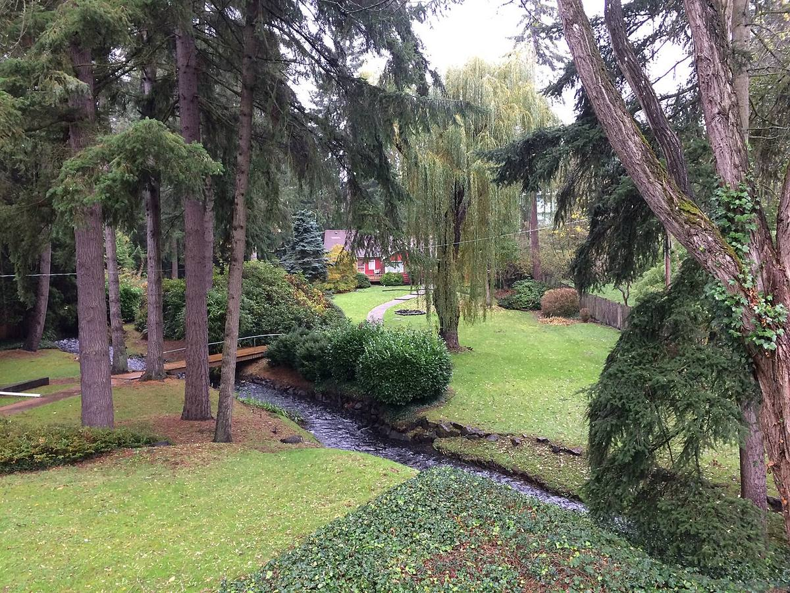

Living in Olympic Hills

Olympic Hills is a neighborhood in the Lake City district of Seattle, Washington. (From Wikipedia, CC BY-SA 4.0)
Olympic Hills is a neighborhood in Lake City, Seattle with about 9,051 residents. The typical home value is about $720K (-2.8% over the past year), and 85 homes sold in the last 12 months. It is somewhat walkable, with higher crime than most neighborhoods in the area.
Home prices and the market
| Typical home value | $720K · -2.8% over 12 months |
|---|---|
| Homes sold, last 12 months | 85 · median sale price $725K · 23 were condos |
| Homes for sale (estimate) | 26 · homes typically go under contract in 19 days |
| Median household income | $109K · 137th highest income of 155 |
Schools
| Elementary | Olympic Hills Elementary School, 0.3 mi · 52% meet standard Area average 58% · 105th best elementary schools of 155 |
|---|---|
| Middle school | Hazel Wolf K-8, 1.1 mi · 61% meet standard Area average 61% · 105th best middle schools of 155 |
| High school | Nathan Hale High School, 1.4 mi · 68% meet standard Area average 68% · 102nd best high schools of 155 |
| Nearest college | North Seattle College, 2.4 mi |
Share of students meeting the Washington state standard in English and math (2024-25). The nearest school is not always the assigned school; check with the school district.
Safety
About 55 crimes per 1,000 residents a year (violent crimes counted three times), higher crime than most neighborhoods in the area: 110th lowest crime of 155. Based on mapped police incidents in this neighborhood, scaled to the city's FBI-reported rate. Busy commercial areas can look high because visitors are not counted as residents.
Getting around
| Walkability | 14.9 of 20 (somewhat walkable) · 75th most walkable of 155 |
|---|---|
| Light rail or train | Pinehurst, 1.0 mi · 50th closest to rail of 155 |
| Nearest bus stop | 30th Ave NE & NE 135th St, 0.28 mi |
| How residents commute | 9% take transit · 34% work from home |
Everyday amenities
| Grocery store | Grocery Outlet, 0.5 mi · 5 within a mile |
|---|---|
| Pharmacy | QFC Pharmacy, 1.4 mi |
| Restaurants | 22 within a mile · 77th most restaurants nearby of 155 |
| Shopping | TJ Maxx, 1.4 mi |
| Hospital | UW Medical Center - Northwest, 1.8 mi · 10 clinics within 2 miles |
| Library | Lake City Library, 0.5 mi |
Parks and recreation
| Nearest park | Small unnamed park, 0.2 mi · 201 acres of parks within a mile |
|---|---|
| Large green space | Jackson Park Golf Course, 0.5 mi |
| Walking trail | Burke-Gilman Trail - Seattle, 1.0 mi |
| Gyms, spas and studios | 12 within a mile |
| Golf | Jackson Park Golf Course, 0.5 mi |
Thinking about Olympic Hills?
Rachel Yo, Realogics Sotheby's International Realty, can walk you through homes for sale, recent sales and what to know before you buy here.
Your details go only to Rachel Yo at Realogics Sotheby's International Realty to answer your request. They are not sold or shared, and your mobile number and texting permission are never shared with anyone for marketing.
Nearby neighborhoods
- PinehurstSeattle · $717K
- Cedar ParkSeattle · $816K
- Victory HeightsSeattle · $761K
- MeadowbrookSeattle · $856K
- Haller LakeSeattle · $749K
- Matthews BeachSeattle · $1.04M
Data as of: home values Zillow 2026-09; recorded sales Nov 2025 – Oct 2026; schools OSPI 2024-25; Census ACS 2020-2024. Distances are straight-line from the center of the neighborhood.